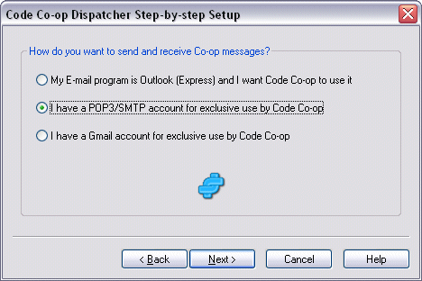

Code Co-op machines keep exchanging synchronization information (check-in scripts). E-mail provides a very efficient way to exchange scripts.
You can configure Code Co-op to communicate with Outlook or Outlook Express using the MAPI interface.
Often a better option is to let Code Co-op use its own built-in e-mail client that can communicate directly with an e-mail server. For that, you will need a dedicated e-mail account (address). You can use a free Gmail account for that purpose.

(You can also usea Hotmail (Windows Live) account by selecting "I have a POP3/SMTP account", and using Advanced E-mail Options to separately configure Hotmail SMTP and POP3.)